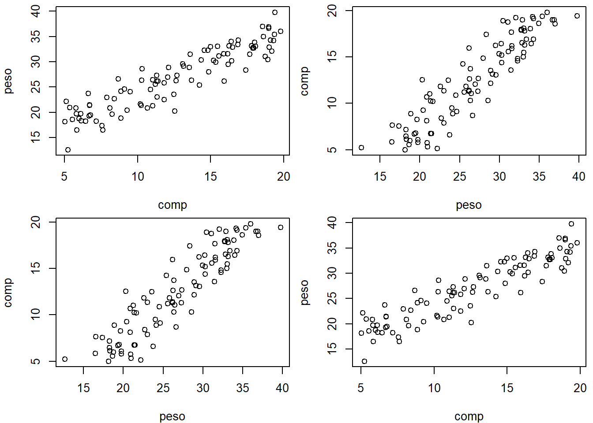
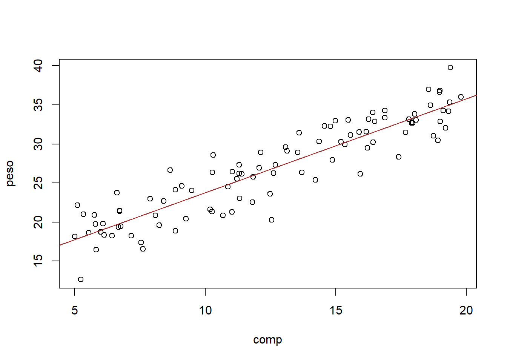
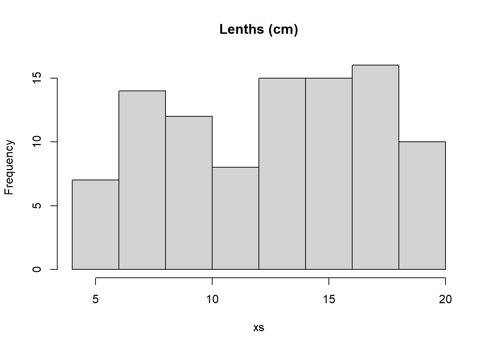
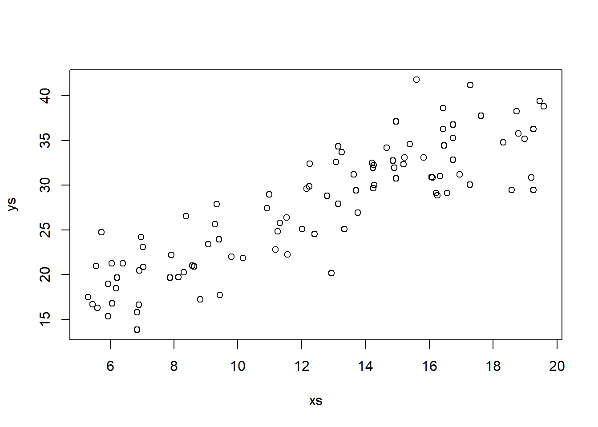
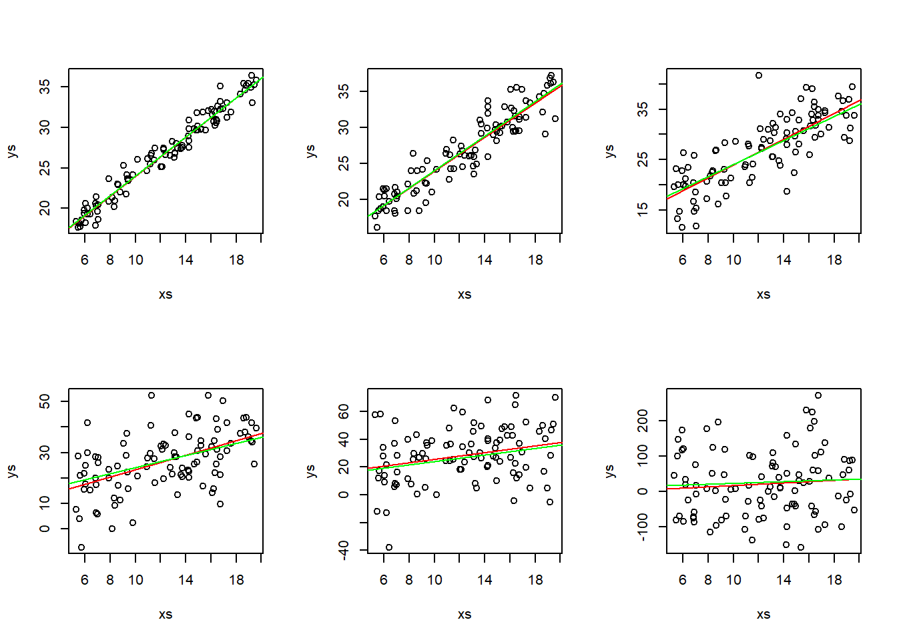
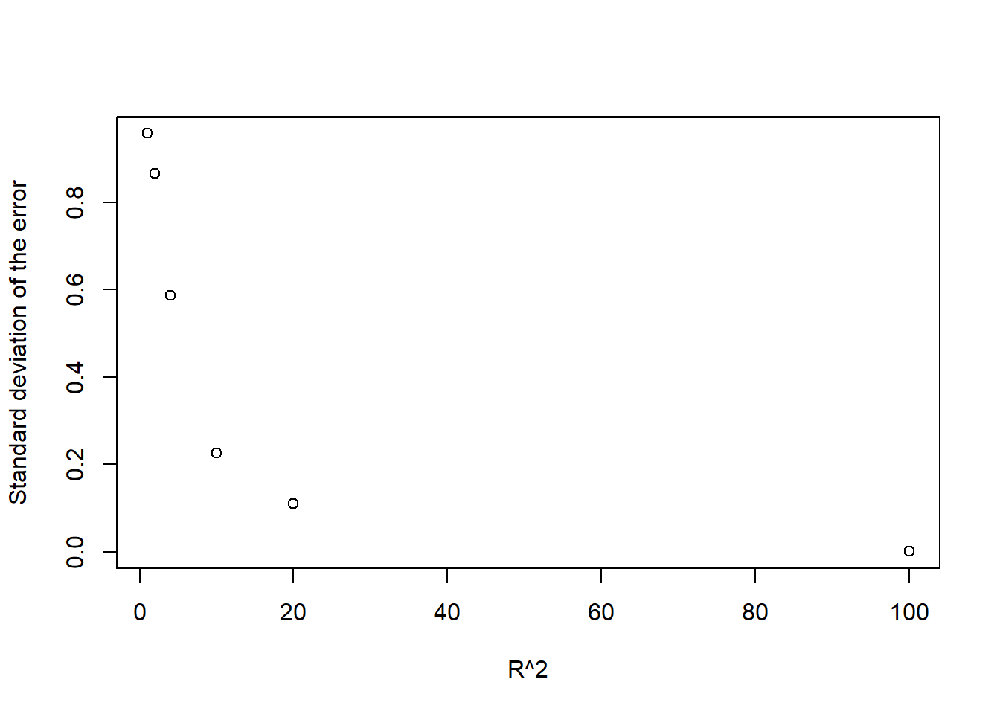
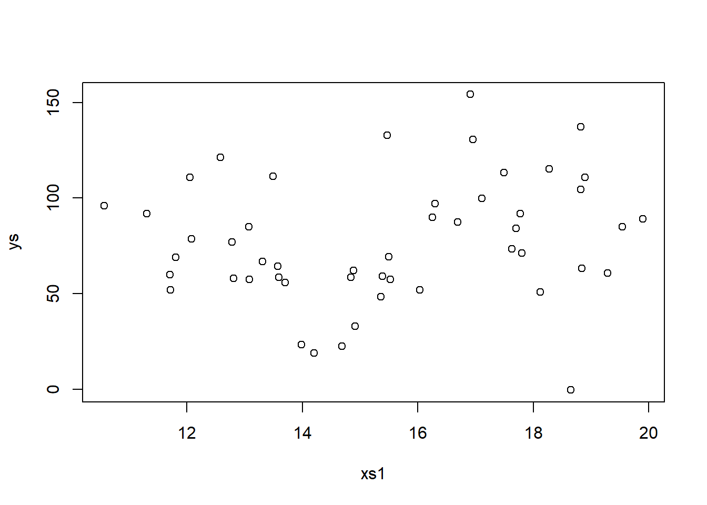
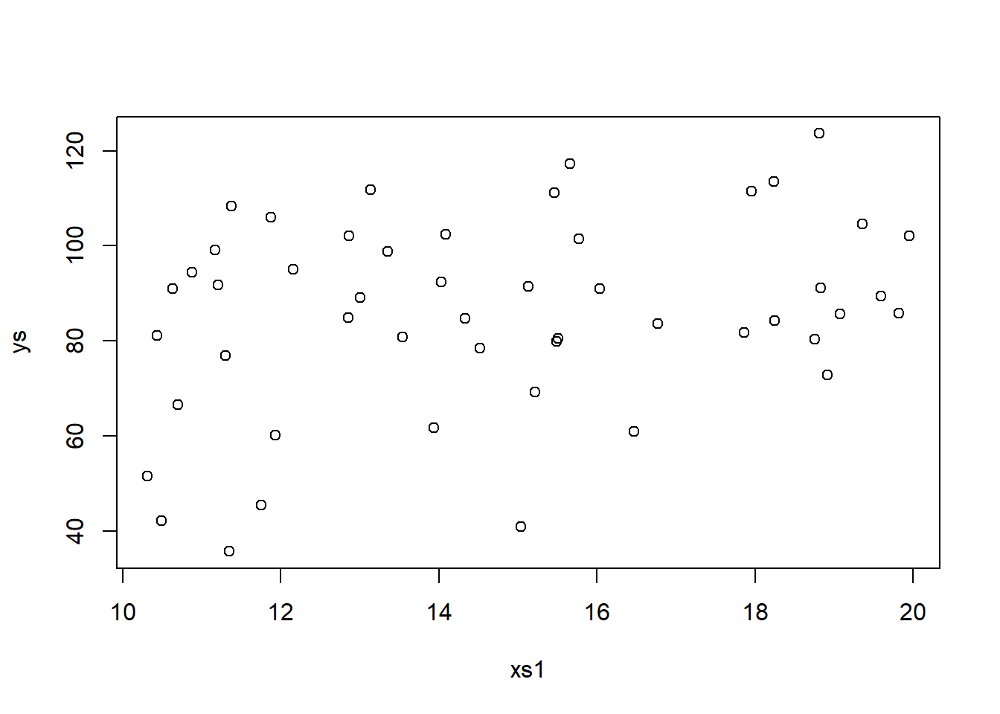
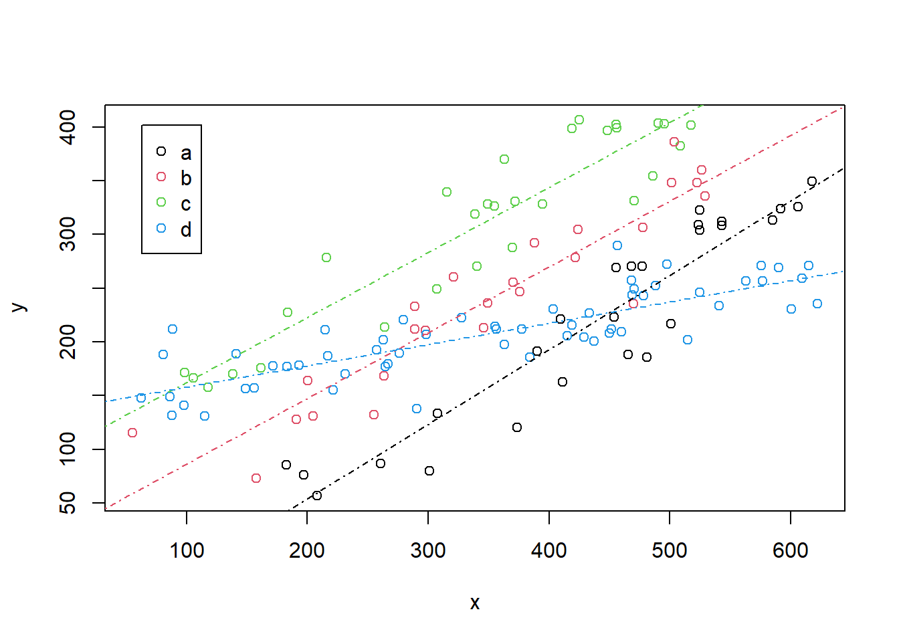

Chapter 8 Regression inside out
In this section we will look at regression models from different angles. Hopefully, by the end of this section, you will have mastered the linear model and will be able to recognize that several statistical procedures with famous names (like t-tests or ANOVA) are just special cases of the linear model.
8.1 Implementing a regression
Consider a dataset where we have the weight and lengths of lizards, and we are interested in modelling the weight as a function of the length of the available individuals. This will provide us an excuse to look at the different aspects of a linear model and the corresponding output.
The dataset is available as a text file: “lagartos.txt” . We begin by reading the data in “lagartos.txt”, exploring the data and then fitting a simple regression, a linear model, to the data. Just as a detail regarding wording, which reflects what the procedure does, we fit models to data, we do not fit data to models!
We begin by reading the data in
#folder<-"../Aula6 13 10 2020/"
folder<-"extfiles/"
lagartos <- read.csv(file=paste0(folder,"lagartos.txt"), sep="")
n <- nrow(lagartos)We can see that we have observations over 97 individuals, for which we have recorded both lengths and weights. We can plot the data, being careful to have the response variable, the weights, on the y-axis, and the explanatory variable, the lengths, on the x-axis.

(tip begins here)
Tip: A common “rookie” mistake is to confuse the defaul R ploting syntax, and mix the two. Note that plot(y~x) is equivalent to plot(x,y) but different from plot(x~y). The latter is not what you want, ´~´ should be read as “as a function of” and so you must have the response on the left side of the tilde, but by default the first argument to the function plot is the \(x\), usually by convention the explanatory variable. The next figure illustrates the differences, where I don’t set the axis labels so that the consequences are transparent
par(mfrow=c(2,2),mar=c(4,4,0.5,0.5))
with(lagartos,plot(peso~comp))
with(lagartos,plot(peso,comp))
with(lagartos,plot(comp~peso))
with(lagartos,plot(comp,peso))
(tip ends here)
A linear model seems adequate to represent the weights as a function of the lengths. This is not surprising, especially since we simulated the data to be so. We fit a linear model to the data
##
## Call:
## lm(formula = peso ~ comp, data = lagartos)
##
## Residuals:
## Min 1Q Median 3Q Max
## -6.5199 -1.6961 0.3495 1.7490 4.7127
##
## Coefficients:
## Estimate Std. Error t value Pr(>|t|)
## (Intercept) 11.72234 0.72299 16.21 <2e-16 ***
## comp 1.20233 0.05402 22.26 <2e-16 ***
## ---
## Signif. codes: 0 '***' 0.001 '**' 0.01 '*' 0.05 '.' 0.1 ' ' 1
##
## Residual standard error: 2.415 on 95 degrees of freedom
## Multiple R-squared: 0.8391, Adjusted R-squared: 0.8374
## F-statistic: 495.3 on 1 and 95 DF, p-value: < 2.2e-16(tip begins here)
Remember that a linear model is just a special generalized linear model (GLM):
##
## Call:
## glm(formula = peso ~ comp, family = gaussian(link = "identity"),
## data = lagartos)
##
## Coefficients:
## Estimate Std. Error t value Pr(>|t|)
## (Intercept) 11.72234 0.72299 16.21 <2e-16 ***
## comp 1.20233 0.05402 22.26 <2e-16 ***
## ---
## Signif. codes: 0 '***' 0.001 '**' 0.01 '*' 0.05 '.' 0.1 ' ' 1
##
## (Dispersion parameter for gaussian family taken to be 5.830492)
##
## Null deviance: 3441.8 on 96 degrees of freedom
## Residual deviance: 553.9 on 95 degrees of freedom
## AIC: 450.27
##
## Number of Fisher Scoring iterations: 2as we can see the output looks a bit different (after all, lm and glm are different functions!), but the results are exactly the same. This does not prove it, but it illustrates by example that a linear model is just a GLM with a Gaussian response and an identity link function.
Lets use the results from lm, while noting that everything else would be the same.
(tip ends here)
The estimated regression line is
\[weight= a+b \times length\] or in this case, with the estimated parameter values,
\[ peso =11.72 +1.2 \times comp \]
and the estimated R-squared is 0.84. The standard error associated with the model is estimated to be 2.4146. Below we explain in detail what each of these values correspond to, but for now bear in mind that the estimated standard error corresponds to the standard deviation of the residuals of the model, that is, the difference between the observations and the predicted values given the model. The observation we have already as data, those are the peso. We can obtain the predicted peso for each observation with the function predict, but here we do it manually so that we see that the errors are just the observations minus the predictions.
#get estimated values
estimated<-with(lagartos,summary(lmlag)$coefficients[1]+summary(lmlag)$coefficients[2]*comp)
# note this would be the same as
# estimated<-predict(lmlag)Now we can compute the residuals and their corresponding standard error
#get residuals
#erros = observações - valores previstos
# e= y- (a+bx)
# y= (a+bx) + e
resid<-lagartos$peso-estimated
sd(resid)## [1] 2.402032Note as predict, we could use just the function residuals with the model object as argument to get us the residuals in a single line of code.
The reason the above standard error is not exactly the same as in the model output above has to do with the degrees of freedom, a concept that is hard to explain in this applied context, but relates to the number of available independent bits of information available. So trust me when I say that we loose a degree of freedom for each parameter estimated in a model. The exact value of the standard deviation as estimated in the model must account for that loss of one extra degree of freedom (associated with estimating the slope of the line), and so the standard formula of the sd needs to be adjusted for the lost degree of freedom, like this:
#Residual Standard error (Like Standard Deviation)
#the right way
#Subtract one to ignore intercept
k=length(lmlag$coefficients)-1
#get the error sum of squares
SSE=sum(lmlag$residuals**2)
#Residual Standard Error
sqrt(SSE/(n-(1+k))) ## [1] 2.414641## [1] 2.414641Now we get the exact same value as above: 2.415.
The summary of the model above is very useful, but nothing like adding the estimated model to the plot with the data. We can easily add the line to the plot with function abline
(tip begins here)
The ab in abline corresponds simply to the \(a\) and \(b\) in \(y=a+bx\), but the function abline is “smart” enough to take other arguments than just an intercept and slope a slope as arguments. It can take
- an object of class
lmand extract the corresponding \(a\) and \(b\) for plotting - argument
vto add vertical line(s) to an existing plot (e.g.v=20would add a vertical line atx=20to an existing plot) - argument
hto add horizontal line(s) to an existing plot (e.g.h=10would add a horizontal line aty=10to an existing plot)
(tip ends here)
#with(lagartos,plot(peso~comp))
plot(peso~comp,data=lagartos)
#these next 3 lines are equivalent
abline(lmlag,col="orange")
abline(a=11.72234,b=1.20233,col="pink")
# y = a + bx
abline(a=summary(lmlag)$coefficients[1,1],b=summary(lmlag)$coefficients[2,1],col="brown")
Note the last line works because the parameter estimates are hold in a component of the summary of the fitted model called coefficients
## Estimate Std. Error t value Pr(>|t|)
## (Intercept) 11.722343 0.72299153 16.21367 4.135172e-29
## comp 1.202333 0.05402397 22.25555 1.839784e-39Additionally, we can also add the residuals in the plot (we use the very handy function segments, that adds segments to existing plots, to do so)
# get estimated/predicted values with function residuals
estimated2<-predict(lmlag)
#plot the data
with(lagartos,plot(peso~comp,pch=21,bg="brown",col="green"))
abline(lmlag,col=3,lty=2)
#add residuals
with(lagartos,segments(x0 = comp,y0 = peso, x1= comp, y1=estimated,lty=2,col="red"))
The regression line corresponds to the line that minimizes the sum of the red distances in the plot above. That is also why it is called a minimum squares line in the special case of a Gaussian model (in PT, é a reta dos mínimos quadrados).
The residuals should, if the model is reasonable - and here that should be the case, as we are using simulated data - be well approximated by a Gaussian distribution. Note we can get the values of the residuals by the difference between the observations and the estimated values, as we did above, or just use the function resid over a fitted model, for simplicity. We can look at an histogram of the residuals below
par(mfrow=c(1,2))
hist(resid,main="Residuals by hand",freq=FALSE)
#adding the theorethical density of a Gaussian with mean 0 and the
#correct standard error
lines(seq(-8,8,by=0.1),dnorm(seq(-8,8,by=0.1),mean=0,sd=summary(lmlag)$sigma))
resid2<-residuals(lmlag)
hist(resid2,main="Residuals by function residuals")
#correct standard error
lines(seq(-8,8,by=0.1),dnorm(seq(-8,8,by=0.1),mean=0,sd=summary(lmlag)$sigma))
It is often said that the \(R^2\) represents the amount of variation in the response that the regression explains, and we are now in a position to illustrate exactly why that is the case. If you assume that all the variability in the response data, the \(y_i\), as the difference between the data points and a common mean
\[\sum_{i=1}^n (y_i- \bar y)^2\] in an image, the sum of the square of these quantities
#plot
with(lagartos,plot(peso~comp))
abline(lmlag,col=3,lty=2)
abline(h=mean(lagartos$peso))
with(lagartos,segments(x0 = comp,y0 = peso, x1= comp, y1=mean(peso),lty=2,col=2))
## [1] 3441.795and the variability that is not explained is the one that remains in the errors - for which the corresponding plot illustrating the concept geometrically was shown above, that is
\[\sum_{i=1}^n (y_i- \hat y_i)^2\]
## [1] 553.8968then the ratio of those two quantities is what is not explained by the regression model, and therefore, 1 minus that is what explained by the regression model:
## [1] 0.8390675And that… as noted above… is the \(R^2\)=0.8391. This comes from the fact that all of the variability in the data (the \(y\), the response, here the peso) can be decomposed into the variability explained by the model, and the unexplained variability, that of the errors. In a formula
\[SS_{TOTAL}=SS_{REGRESSÃO}+SS_{ERRO}\]
Note naturally we could also represent in an image what is explained by the regression model, which is
\[\sum_{i=1}^n (\hat y_i- \bar y)^2\]
#plot
with(lagartos,plot(peso~comp))
abline(lmlag,col=3,lty=2)
abline(h=mean(lagartos$peso))
with(lagartos,segments(x0 = comp,y0 = estimated, x1= comp, y1=mean(peso),lty=2,col=2))
and that naturally is obtained as
## [1] 2887.898and hence the total variability is given by the sum \(SS_{REGRESSÃO}+SS_{ERRO}\)
## [1] 3441.795which we had already established to be the total variability in the response
## [1] 3441.795So, remember that
\[SS_{TOTAL}=SS_{REGRESSÃO}+SS_{ERRO}\]
This is something that is often stated without a clear explanation of the reason why that holds. While here I show it by example, it could be easily demonstrated algebraically if one wanted that
\[\sum_{i=1}^n (y_i- \bar y)^2=\sum_{i=1}^n (\hat y_i- \bar y)^2 + \sum_{i=1}^n (y_i- \hat y_i)^2\]
If you want to see that that, this 28 minute video shows you the proof: https://www.youtube.com/watch?v=aQ32qTjqqJM
I think it could take just 5 minutes ;) but many thanks to Dmitry Leiderman for having it out there! He does it in the context of ANOVA, but ANOVA is just a special case of regression, were you have a continuous response and a single categorical explanatory variable. Therefore, have fun!
8.2 Simulating regression data
Considering the above example, it should be possible for you to simulate similar data to that we had for the lizards, data assuming that the true relation between the weight and length of a lizard was given by
\[ peso = 12 + 1.2 * comp \]
Note that this is a luxury we never have as researchers dealing with real data, knowing what truth is. But creating data from know truth scenarios via simulation can be invaluanble, as it allows us to explore the preformance of methods wehn we know what we should expect from them.
Here we consider that the usual length of a lizard can be between 5 and 20 cm, and the standard error is 4. As in the data we will have 97 lizards.
Then you were told to create the lengths:

and then to create weights of lizards
If we plot the data, all points are in a single line. Why? Because there is no randomness. Given the length of a lizard, we know the weight for sure.

This means that if you try to run a model, it gives you a warning that the model might be unreliable
## Warning in summary.lm(lm(ys ~ xs)): essentially perfect fit: summary may be
## unreliable##
## Call:
## lm(formula = ys ~ xs)
##
## Residuals:
## Min 1Q Median 3Q Max
## -5.595e-15 -2.460e-15 -1.878e-15 -1.422e-15 1.873e-13
##
## Coefficients:
## Estimate Std. Error t value Pr(>|t|)
## (Intercept) 1.200e+01 6.050e-15 1.983e+15 <2e-16 ***
## xs 1.200e+00 4.611e-16 2.603e+15 <2e-16 ***
## ---
## Signif. codes: 0 '***' 0.001 '**' 0.01 '*' 0.05 '.' 0.1 ' ' 1
##
## Residual standard error: 1.934e-14 on 95 degrees of freedom
## Multiple R-squared: 1, Adjusted R-squared: 1
## F-statistic: 6.773e+30 on 1 and 95 DF, p-value: < 2.2e-16reflecting that unlike what the model assumes, there would be no stochasticity in the data.
(tip begins here)
The data stochasticity, or variability, might be induced by process error, i.e. the model might not be perfect, hence not being deterministic as is always the case in nature, but also induced by observation error, e.g. because there is a random error in the measurement of the weights. In practice with a linear model we do not try to separate the two sources of errors, but in more advanced models that might be of interest in itself.
(tip ends here)
Therefore, we make the data realistic, and adhering to the model, by adding some variability to the data, in particular we assume the variability can be represented by Gaussian errors with mean zero and standard deviation of 4 units. Then we plot the data:

we can now fit a linear model to the data, whic we call lmSimL and explore the results
##
## Call:
## lm(formula = ys ~ xs, data = SimL)
##
## Residuals:
## Min 1Q Median 3Q Max
## -8.2024 -2.0587 -0.0304 2.2903 9.6963
##
## Coefficients:
## Estimate Std. Error t value Pr(>|t|)
## (Intercept) 10.47408 1.05716 9.908 2.6e-16 ***
## xs 1.38463 0.08057 17.186 < 2e-16 ***
## ---
## Signif. codes: 0 '***' 0.001 '**' 0.01 '*' 0.05 '.' 0.1 ' ' 1
##
## Residual standard error: 3.379 on 95 degrees of freedom
## Multiple R-squared: 0.7566, Adjusted R-squared: 0.7541
## F-statistic: 295.4 on 1 and 95 DF, p-value: < 2.2e-16We can extract from the model the relevant estimated quantities:
- the intercept is estimated to be 10.4740833 (using
coef(lmSimL)[1]), - the slope is estimated to be 1.3846293 (using
coef(lmSimL)[2]), - the residual error to be 3.3787165 (using
summary(lmSimL)$sigma), and - the \(R^2\) to be 0.7566342 (using
summary(lmSimL)$r.squared).
All the parameters were suitably estimated, not surprising since the amount of error was moderate, reflecting that the xs have a good explanatory power over the ys.
Using the code above, experiment with changing the standard deviation of the error, and see what happens to the estimated \(R^2\), to the parameter estimates, to the estimated error, and to how close the estimated regression model is to the true model.
This is the amazing advantage of a simulation, which we do not have in real data: we know what reality is, and a true model exists!. This will give you a good feeling for what a regression model is and what is does, and what it can’t do. An example of what it can’t give you is reliable estimates when the error is large compared to the systematic part of the model, as illustrated next
n <- 97
#simular comprimentos
comp.sim <- runif(n,5,20)
a<-12
b<-1.2
#simular pesos
peso.sim<-a+b*comp.sim+rnorm(n,mean=0,sd=2)
data.sim=data.frame(csim=comp.sim,psim=peso.sim)
plot(psim~csim,data=data.sim)
mod.sim<-lm(psim~csim,data=data.sim)
abline(mod.sim,col="red")
summary(mod.sim)##
## Call:
## lm(formula = psim ~ csim, data = data.sim)
##
## Residuals:
## Min 1Q Median 3Q Max
## -5.3460 -1.1652 0.1329 1.5072 3.0036
##
## Coefficients:
## Estimate Std. Error t value Pr(>|t|)
## (Intercept) 11.70390 0.56783 20.61 <2e-16 ***
## csim 1.20912 0.04325 27.96 <2e-16 ***
## ---
## Signif. codes: 0 '***' 0.001 '**' 0.01 '*' 0.05 '.' 0.1 ' ' 1
##
## Residual standard error: 1.822 on 95 degrees of freedom
## Multiple R-squared: 0.8916, Adjusted R-squared: 0.8905
## F-statistic: 781.6 on 1 and 95 DF, p-value: < 2.2e-16abline(a,b,col="green")
legend("topleft",legend=c("Estimated line","True model"),col=c("red","green"),lty=1,inset=0.05)
8.2.1 What is the effect of increasing the error: a simulation experiment
Now, let’s consider there’s more and less variance. We also add to each plot the real line (that with the true parameter values) and the one with the estimated parameter values.
par(mfrow=c(2,3))
ys=a+b*xs+rnorm(n,0,1)
plot(xs,ys)
mod1=lm(ys~xs)
abline(mod1,col="red")
abline(a,b,col="green")
ys=a+b*xs+rnorm(n,0,2)
plot(xs,ys)
mod2=lm(ys~xs)
abline(mod2,col="red")
abline(a,b,col="green")
ys=a+b*xs+rnorm(n,0,4)
plot(xs,ys)
mod4=lm(ys~xs)
abline(mod4,col="red")
abline(a,b,col="green")
ys=a+b*xs+rnorm(n,0,10)
plot(xs,ys)
mod10=lm(ys~xs)
abline(mod10,col="red")
abline(a,b,col="green")
ys=a+b*xs+rnorm(n,0,20)
plot(xs,ys)
mod20=lm(ys~xs)
abline(mod20,col="red")
abline(a,b,col="green")
ys=a+b*xs+rnorm(n,0,100)
plot(xs,ys)
mod100=lm(ys~xs)
abline(mod100,col="red")
abline(a,b,col="green")
Not surprisingly, as the variance increases, we get data that more and more looks like it is not coming from a real linear process.
You can also look at the model summaries, and there you can see that, in fact, the models become essentially useless as the variance increases! You can see that both from the correlation, but also by the predictions generated from the model (comparing to the truth), and also the significance of the coefficients associated with the regression parameters.
Make no mistake, the reality is always the same, in terms of the fixed part of the model, it is just the variance that we observe reality with that increases. This could happen either because the model is not adequate (e.g. there are other variables than just length that explain the weight) but also because the measurement error in the weights might be larger (e.g. think about measuring the weight of whales, instead that of lizards, say).
Also, do not get confused, the different green lines might look different, but they are always exactly the same line, the same true model is constant across all plots! You can check that by forcing the y axis to span the same limits.
par(mfrow=c(2,3))
ys=a+b*xs+rnorm(n,0,1)
plot(xs,ys,ylim=c(-400,400))
mod1=lm(ys~xs)
abline(mod1,col="red")
abline(a,b,col="green")
ys=a+b*xs+rnorm(n,0,2)
plot(xs,ys,ylim=c(-400,400))
mod2=lm(ys~xs)
abline(mod2,col="red")
abline(a,b,col="green")
ys=a+b*xs+rnorm(n,0,4)
plot(xs,ys,ylim=c(-400,400))
mod4=lm(ys~xs)
abline(mod4,col="red")
abline(a,b,col="green")
ys=a+b*xs+rnorm(n,0,10)
plot(xs,ys,ylim=c(-400,400))
mod10=lm(ys~xs)
abline(mod10,col="red")
abline(a,b,col="green")
ys=a+b*xs+rnorm(n,0,20)
plot(xs,ys,ylim=c(-400,400))
mod20=lm(ys~xs)
abline(mod20,col="red")
abline(a,b,col="green")
ys=a+b*xs+rnorm(n,0,100)
plot(xs,ys,ylim=c(-400,400))
mod100=lm(ys~xs)
abline(mod100,col="red")
abline(a,b,col="green")
but since then you loose all the ability to look at the actual data in some of the plots, that representation is not really that useful!
Below we tabulate the summary statistics for of each model with increasing variance, focusing on the estimated values for the parameters, their corresponding variances and the \(R^2\).
library(knitr)
model.stats<-data.frame(error=c(1,2,4,10,20,100),intercept=NA,ise=NA,slope=NA,sse=NA,sde=NA,R2=NA)
model.stats[1,2:7]<-c(coef(summary(mod1))[1,1:2],coef(summary(mod1))[2,1:2],summary(mod1)$sigma,summary(mod1)$r.squared)
model.stats[2,2:7]<-c(coef(summary(mod2))[1,1:2],coef(summary(mod2))[2,1:2],summary(mod2)$sigma,summary(mod2)$r.squared)
model.stats[3,2:7]<-c(coef(summary(mod4))[1,1:2],coef(summary(mod4))[2,1:2],summary(mod1)$sigma,summary(mod4)$r.squared)
model.stats[4,2:7]<-c(coef(summary(mod10))[1,1:2],coef(summary(mod10))[2,1:2],summary(mod1)$sigma,summary(mod10)$r.squared)
model.stats[5,2:7]<-c(coef(summary(mod20))[1,1:2],coef(summary(mod20))[2,1:2],summary(mod1)$sigma,summary(mod20)$r.squared)
model.stats[6,2:7]<-c(coef(summary(mod100))[1,1:2],coef(summary(mod100))[2,1:2],summary(mod1)$sigma,summary(mod100)$r.squared)
kable(model.stats,digits=2)| error | intercept | ise | slope | sse | sde | R2 |
|---|---|---|---|---|---|---|
| 1 | 12.25 | 0.34 | 1.19 | 0.03 | 1.08 | 0.96 |
| 2 | 11.23 | 0.67 | 1.26 | 0.05 | 2.13 | 0.87 |
| 4 | 12.94 | 1.26 | 1.12 | 0.10 | 1.08 | 0.59 |
| 10 | 12.19 | 3.01 | 1.21 | 0.23 | 1.08 | 0.23 |
| 20 | 9.24 | 6.40 | 1.67 | 0.49 | 1.08 | 0.11 |
| 100 | 41.65 | 30.10 | -0.55 | 2.29 | 1.08 | 0.00 |
As an example, we can plot the \(R^2\) as a function of the variance
plot(c(1,2,4,10,20,100),c(summary(mod1)$r.squared,summary(mod2)$r.squared,summary(mod4)$r.squared,summary(mod10)$r.squared,summary(mod20)$r.squared,summary(mod100)$r.squared),xlab="R^2",ylab="Standard deviation of the error")
That is quite interesting actually. There seems to be a nonlinear relationship, but we only have a sample size of six different standard deviations, i.e., variances, as variance is standard deviation squared, so it is hard to tell. But we can bring in the power of a for loop to do this for us for many values of the errors. We can then plot the results:
sds=seq(0.5,100,by=0.5)
nsds=length(sds)
#an object to hold the correlations
Rsqs=numeric(nsds)
for (i in 1:nsds){
#create data
ys=a+b*xs+rnorm(n,0,sds[i])
#estimate model
modi=lm(ys~xs)
#get R-squared
Rsqs[i]=summary(modi)$r.squared
}
#and at the end... plot results
plot(sds,Rsqs)
How cool is that! There seems to be evidence of a clear pattern, as anticipated. There is noise in the relation, and that comes because at each iteration there is randomness in the simulated data. Can you think of a way to reduce the noise in the pattern shown? If so, do it yourself!
This means we can model the \(R^2\) as a function of the original variance! But we would not be able to model it using a linear model. While you are supposed to know about this yet, generalized linear models, which can be implemented with the help of function gam in package mgcv can come to our help. Later on we will earn more about GAM’s, but for now you can take a look at Noam Ross’s outstanding online free course on them (https://noamross.github.io/gams-in-r-course/) if you can’t wait for it.
Here I will just use it as is, you might see the syntax is quite similar to that of the lm function, we simply add syntax to reflect that we have non-linear, smooth terms of covariates (say e.g. s(x)).
## Loading required package: nlme## This is mgcv 1.9-1. For overview type 'help("mgcv-package")'.gam1=gam(Rsqs~s(sds),link=log)
#make predictions to plot the estimated GAM model
predRsqs=predict.gam(gam1,newdata = list(sds=sds),type="response")
plot(sds,Rsqs)
lines(sds,predRsqs,col="red")
While we have not yet talked about it, intuitively it seems like the model over-fitted to the data. In other words, the model is too much flexible. Therefore, I constrain the GAM to be not as wiggly (while it might sound like a funny made-up word, the “wiggliness” of a GAM is a technical term used even in publications) by changing the argument k which defines the degrees of freedom in the smooth term.
library(mgcv)
gam1=gam(Rsqs~s(sds,k=3),link=log)
#make predictions to plot the estimated GAM model
predRsqs=predict.gam(gam1,newdata = list(sds=sds),type="response")
plot(sds,Rsqs)
lines(sds,predRsqs,col="red")
That was too much constraining, so now we are under-fitting, the model in not flexible enough to fit the data. We increase the allowed level of wiggliness again
library(mgcv)
gam1=gam(Rsqs~s(sds,k=6),link=log)
#make predictions to plot the estimated GAM model
predRsqs=predict.gam(gam1,newdata = list(sds=sds),type="response")
plot(sds,Rsqs)
lines(sds,predRsqs,col="red")
but that is already over-fitting… conclusion, the GAM might not be the right tool here :) Perhaps we could consider a model that embeds some understanding about the process between the two quantities, which is presumably possible to achieve by exploring analytically what said relation should be.
Being happy with the visual illustration of the relation and the preview of how the use of a more flexible approach than a linear model might be useful to fit models to data, we will leave that implementation for readers which might find it an interesting (but quite likely to be found non-trivial) exercise.
8.3 Two tasks to further understand regression
In this section we continue exploring regression models, but we are going to increase their complexity. We are no longer just thinking about the simple linear model a+bx, but we add more explanatory variables. In particular, we will also add a factor covariate. And then we look under the hood to understand what that means in practice and how to interpret the regression coefficients.
We do this based on a couple of tasks. Implementing the tasks allows the students to see hands on what is behind the regression model.
8.3.1 Task 1
The first task the students were faced was to use some code to explore, by simulation, the impact of having variables in the model that are not relevant to explain the response. In particular, we wanted to identify when there would be no errors, or when there would be type I (a variable not relevant to explain the response is found relevant) and type II (a relevant variable to explain the response is not considered relevant) errors.
For the sake of this example we consider a significance level of 5%, but remember there is nothing sacred about \(\alpha=0.05\). The significance level should be chosen by a researcher given proper consideration of the implications of a type I error in the considered setting.
The guidelines provided were: “Using the code below, and while changing the seed (****** to begin with, so the code does not run as is!), explore how changing the parameters and the error leads to different amounts of type I and type II errors.”
# xs1 and xs2 wrong - type II error, xs3 and xs4 ok
seed<-******
set.seed(seed)
#define parameters
n<-50;b0<-5;b1<-3;b2<--2;error <- 4
#simulate potential explanatory variables
xs1=runif(n,10,20)
xs2=runif(n,10,20)
xs3=runif(n,10,20)
xs4=runif(n,10,20)
#simulate response
ys=b0+b1*xs1-b2*xs2+rnorm(n,sd=error)
#plot data
plot(xs1,ys)
#a model missing a variable, xs2
#summary(lm(ys~xs1))
#the true model
#summary(lm(ys~xs1+xs2))
#a model including irrelevant variables
summary(lm(ys~xs1+xs2+xs3+xs4))The first thing to notice is that the model we simulate from only includes xs1 and xs2. So, xs3 and xs4 do not have any impact on the response y. In other words, if we find that xs3 and/or xs4 are relevant to explain the response we have a type I error, as we have identified an effect where there was none. On the other hand, if we do not find xs1 and xs2 to be relevant to explain the response, we have a type II error, as we failed to identify a real effect.
So we try different values for the seed and check what happens. Let’s just try seed<-1
seed<-1
set.seed(seed)
#define parameters
n<-50;b0<-5;b1<-3;b2<--2;error <- 4
#simulate potential explanatory variables
xs1=runif(n,10,20)
xs2=runif(n,10,20)
xs3=runif(n,10,20)
xs4=runif(n,10,20)
#simulate response
ys=b0+b1*xs1-b2*xs2+rnorm(n,sd=error)
#plot data
plot(xs1,ys)
#look at model summary
summary(lm(ys~xs1+xs2+xs3+xs4))All good, no errors. That is, xs1 and xs2 are considered statistically significant at th 5% level and xs3 and xs4 are not found relevant to explain the response. Now, we keep changing seed
seed<-4
set.seed(seed)
#define parameters
n<-50;b0<-5;b1<-3;b2<--2;error <- 4
#simulate potential explanatory variables
xs1=runif(n,10,20)
xs2=runif(n,10,20)
xs3=runif(n,10,20)
xs4=runif(n,10,20)
#simulate response
ys=b0+b1*xs1-b2*xs2+rnorm(n,sd=error)
#plot data
plot(xs1,ys)
#look at model summary
summary(lm(ys~xs1+xs2+xs3+xs4))We find our first type I error, xs4 is found statistically significant, but we know it has no effect on the response. The same happens with seed being e.g. 9, 10. When we try seed <- 11 we get another type I error, this time on xs4
seed<-11
set.seed(seed)
#define parameters
n<-50;b0<-5;b1<-3;b2<--2;error <- 4
#simulate potential explanatory variables
xs1=runif(n,10,20)
xs2=runif(n,10,20)
xs3=runif(n,10,20)
xs4=runif(n,10,20)
#simulate response
ys=b0+b1*xs1-b2*xs2+rnorm(n,sd=error)
#plot data
plot(xs1,ys)
##
## Call:
## lm(formula = ys ~ xs1 + xs2 + xs3 + xs4)
##
## Residuals:
## Min 1Q Median 3Q Max
## -10.3076 -2.7316 0.3072 2.2102 7.9088
##
## Coefficients:
## Estimate Std. Error t value Pr(>|t|)
## (Intercept) 16.44303 7.42710 2.214 0.0319 *
## xs1 2.87327 0.21665 13.262 < 2e-16 ***
## xs2 1.93313 0.25274 7.649 1.12e-09 ***
## xs3 -0.47689 0.22325 -2.136 0.0381 *
## xs4 -0.08922 0.20937 -0.426 0.6720
## ---
## Signif. codes: 0 '***' 0.001 '**' 0.01 '*' 0.05 '.' 0.1 ' ' 1
##
## Residual standard error: 4.074 on 45 degrees of freedom
## Multiple R-squared: 0.8484, Adjusted R-squared: 0.8349
## F-statistic: 62.94 on 4 and 45 DF, p-value: < 2.2e-16However, even after several runs, we never make a type II error. That must mean this setting has a large power, i.e. the ability to detect a true effect when one exists. Well, there are many ways to decrease power, like having a smaller sample size, increase the error or lower the true effect. Let’s try to increase the error, instead of the 4 used above, let’s pump it up10 fold to 40
seed<-100
set.seed(seed)
#define parameters
n<-50;b0<-5;b1<-3;b2<--2;error <- 40
#simulate potential explanatory variables
xs1=runif(n,10,20)
xs2=runif(n,10,20)
xs3=runif(n,10,20)
xs4=runif(n,10,20)
#simulate response
ys=b0+b1*xs1-b2*xs2+rnorm(n,sd=error)
#plot data
plot(xs1,ys)
##
## Call:
## lm(formula = ys ~ xs1 + xs2 + xs3 + xs4)
##
## Residuals:
## Min 1Q Median 3Q Max
## -73.25 -17.86 -6.76 21.25 68.42
##
## Coefficients:
## Estimate Std. Error t value Pr(>|t|)
## (Intercept) 22.8661 41.3133 0.553 0.583
## xs1 1.6034 1.8564 0.864 0.392
## xs2 0.9163 1.8092 0.506 0.615
## xs3 1.9650 1.6038 1.225 0.227
## xs4 -0.8544 1.7449 -0.490 0.627
##
## Residual standard error: 32.4 on 45 degrees of freedom
## Multiple R-squared: 0.06896, Adjusted R-squared: -0.0138
## F-statistic: 0.8333 on 4 and 45 DF, p-value: 0.5112That was an overkill, now there is so much noise must seeds we use do not allow us to find an effect, let’s cut that in half to 20
seed<-100
set.seed(seed)
#define parameters
n<-50;b0<-5;b1<-3;b2<--2;error <- 20
#simulate potential explanatory variables
xs1=runif(n,10,20)
xs2=runif(n,10,20)
xs3=runif(n,10,20)
xs4=runif(n,10,20)
#simulate response
ys=b0+b1*xs1-b2*xs2+rnorm(n,sd=error)
#plot data
plot(xs1,ys)
##
## Call:
## lm(formula = ys ~ xs1 + xs2 + xs3 + xs4)
##
## Residuals:
## Min 1Q Median 3Q Max
## -36.624 -8.927 -3.380 10.623 34.211
##
## Coefficients:
## Estimate Std. Error t value Pr(>|t|)
## (Intercept) 13.9330 20.6566 0.675 0.503
## xs1 2.3017 0.9282 2.480 0.017 *
## xs2 1.4582 0.9046 1.612 0.114
## xs3 0.9825 0.8019 1.225 0.227
## xs4 -0.4272 0.8724 -0.490 0.627
## ---
## Signif. codes: 0 '***' 0.001 '**' 0.01 '*' 0.05 '.' 0.1 ' ' 1
##
## Residual standard error: 16.2 on 45 degrees of freedom
## Multiple R-squared: 0.2262, Adjusted R-squared: 0.1574
## F-statistic: 3.288 on 4 and 45 DF, p-value: 0.01901back to all correct. Now, let’s change seed again
seed<-103
set.seed(seed)
#define parameters
n<-50;b0<-5;b1<-3;b2<--2;error <- 20
#simulate potential explanatory variables
xs1=runif(n,10,20)
xs2=runif(n,10,20)
xs3=runif(n,10,20)
xs4=runif(n,10,20)
#simulate response
ys=b0+b1*xs1-b2*xs2+rnorm(n,sd=error)
#plot data
plot(xs1,ys)
##
## Call:
## lm(formula = ys ~ xs1 + xs2 + xs3 + xs4)
##
## Residuals:
## Min 1Q Median 3Q Max
## -36.079 -10.686 -0.148 16.413 33.845
##
## Coefficients:
## Estimate Std. Error t value Pr(>|t|)
## (Intercept) 9.70575 33.83339 0.287 0.7755
## xs1 2.32559 0.93980 2.475 0.0172 *
## xs2 1.97688 1.20464 1.641 0.1078
## xs3 0.69013 1.02110 0.676 0.5026
## xs4 0.08031 0.97427 0.082 0.9347
## ---
## Signif. codes: 0 '***' 0.001 '**' 0.01 '*' 0.05 '.' 0.1 ' ' 1
##
## Residual standard error: 19.6 on 45 degrees of freedom
## Multiple R-squared: 0.1524, Adjusted R-squared: 0.07706
## F-statistic: 2.023 on 4 and 45 DF, p-value: 0.1073Bang on, a type II error, as xs2 is no longer considered statistically significant. I am sure you can now play with the relevant model parameters, b1, b2, to incleare and decreese the actual effect, and with sample size n or as above with the error and explore the consequences of changing the balance in effect size, error and sample size on the ability of incurring in errors when doing regression. But remmeber the key, the reason we are able to see if an error is made or not is because we simulated reality. In this case, as it is never the case in an ecological dataset, we know the true model, which was
\[y=\beta_0+\beta_1 xs_1+\beta_2 xs2\]
That is the luxury of simulation, allowing you to test scenarios where “reality” is known, hence evaluating methods performance.
8.3.2 Task 2
The second task the students were faced was to create some regression data and the explore fitting models to it.

The data was simulated via this website: https://drawdata.xyz/ and was named data4lines.csv. Each student had its own dataset, here I work with my example.
We begin by reading the data in and plot it
#read the data
folder<-"extfiles/"
data4lines <- read.csv(file=paste0(folder,"data4lines.csv"))
#plot all the data
plot(y~x,data=data4lines)
Now, to turn this a bit more interesting, we come up with a narrative.
These correspond to observations from weights and lengths of a sample of animals, fish from the species Fishus inventadicus. We could fit a regression line to this data and see if we can predict weight from length
#plot all the data
plot(y~x,data=data4lines)
#fit model to pooled data
lmlinesG<-lm(y~x,data=data4lines)
abline(lmlinesG,lwd=3,lty=2)
##
## Call:
## lm(formula = y ~ x, data = data4lines)
##
## Residuals:
## Min 1Q Median 3Q Max
## -134.304 -44.188 -1.995 29.432 148.202
##
## Coefficients:
## Estimate Std. Error t value Pr(>|t|)
## (Intercept) 107.17590 14.03069 7.639 3.51e-12 ***
## x 0.35513 0.03553 9.995 < 2e-16 ***
## ---
## Signif. codes: 0 '***' 0.001 '**' 0.01 '*' 0.05 '.' 0.1 ' ' 1
##
## Residual standard error: 61.78 on 136 degrees of freedom
## Multiple R-squared: 0.4235, Adjusted R-squared: 0.4193
## F-statistic: 99.91 on 1 and 136 DF, p-value: < 2.2e-16and it looks like we can indeed predict the weight of the species from its length. The length is highly statistically significant. Not surprisingly, the longer the fish the heavier it is.
Now, the plot thickens. These animals actually came from 4 different museums, and are assumed to be the same species. However, a scientist decides to look at whether there are differences in the data from the 4 museums. So he colors the data by museum
#plot all the data
plot(y~x,col=as.numeric(as.factor(z)),data=data4lines,pch=1)
legend("topleft",inset=0.05,legend=letters[1:4],col=1:4,pch=1)
We see a pattern in the data, the data from the different museums tend to cluster. He decides to investigate. Note folks providing names to museum in this country are a bit boring, and the museums are called “a”, “b”, “c” and “d”.
Our smart researcher says: “well, it seems like the relationship might be different in each museum”. Then, maybe I should fit a model that includes museum as a covariate weight~length+museum.
\[y=\beta_0+\beta_1 \times length +\beta_2 \times museum\]
And so he does and plots it
##
## Call:
## lm(formula = y ~ x + z, data = data4lines)
##
## Residuals:
## Min 1Q Median 3Q Max
## -90.01 -35.01 2.54 35.51 108.10
##
## Coefficients:
## Estimate Std. Error t value Pr(>|t|)
## (Intercept) 45.51813 13.83069 3.291 0.00128 **
## x 0.39657 0.02516 15.763 < 2e-16 ***
## zb 54.92376 12.11597 4.533 1.28e-05 ***
## zc 128.20339 11.72572 10.934 < 2e-16 ***
## zd 22.82412 10.26509 2.223 0.02787 *
## ---
## Signif. codes: 0 '***' 0.001 '**' 0.01 '*' 0.05 '.' 0.1 ' ' 1
##
## Residual standard error: 42.5 on 133 degrees of freedom
## Multiple R-squared: 0.7332, Adjusted R-squared: 0.7252
## F-statistic: 91.38 on 4 and 133 DF, p-value: < 2.2e-16The output shows that the length is relevant, but the museum is relevant too. The relationship might be different per museum! In the output we see the x, the length, but not the z, it has been transformed into zb, zc and zd. Why is that? That is a mystery that we shall unfold now!
While the model we are fitting might be represented by weight~length+museum, the design matrix being fitted replaces the museum (a factor with 4 levels) with 3 dummy variables (a factor with k levels required k-1 dummy variables). So the real model being fitted is really
\[y=\beta_0+\beta_1 \times length + \beta_{2b} \times zb + \beta_{2c} \times zc + \beta_{2d} \times zd\]
Wait, but where is the level a? It is in the intercept, and if I had an euro for each time that confused a student, I would not be here but in a beach in the Bahamas having a piña colada :)
But let’s unfold the mistery, shall we? By default, R takes 1 level of (each/a) factor and uses it as the intercept. Here it used a (the choice is in this case by alphabetical ored, but one can change that, which might be useful if e.g. you want to have as the intercept a control level, say; look e.g. into function factor help to see how you can change the baseline level of a factor).
Hence, the intercept for museum a is 45.5181335. What about the intercep of the othe rmuseums? They are always reported with a as the reference. Look at the equation above, what happens when say zc is 1 and zd and zb are 0, it becomes
\[y=\beta_0+\beta_1 \times length + \beta_{2c} \times zc \] \[y=(\beta_0+\beta_{2c})+\beta_1 \times length = intercep + slope \times length\]
and so, from the above output, that equates to y=lmlines$coefficients[1]+lmlines$coefficients[4],lmlines$coefficients[2] or 173.7215247+0.3965715 \(\times\) length.
So now we can add all these estimated regression lines to the plot
#plot all
plot(y~x,col=as.numeric(as.factor(z)),data=data4lines)
legend("topleft",inset=0.05,legend=c(LETTERS[1:4],"all"),col=c(1:4,1),lty=c(rep(1,4),2),lwd=c(rep(1,4),3))
#these are the wrong lines... why?
abline(lmlinesG,lwd=3,lty=2)
abline(lmlines$coefficients[1],lmlines$coefficients[2],col=1)
abline(lmlines$coefficients[1]+lmlines$coefficients[3],lmlines$coefficients[2],col=2)
abline(lmlines$coefficients[1]+lmlines$coefficients[4],lmlines$coefficients[2],col=3)
abline(lmlines$coefficients[1]+lmlines$coefficients[5],lmlines$coefficients[2],col=4)
note that, not surprisingly, all these lines have the same slope. Or in other words, the model we considered assumes that the slope of the model is the same across museums (which, remember, we know if not true!). We can easily check that the intercepts (i.e. where the lines cross when length=x=0) of all lines are indeed easy to get from the model’s output
#plot all
plot(y~x,xlim=c(-10,700),ylim=c(0,450),col=as.numeric(as.factor(z)),data=data4lines)
legend("topleft",inset=0.05,legend=c(LETTERS[1:4],"all"),col=c(1:4,1),lty=c(rep(1,4),2),lwd=c(rep(1,4),3))
#these are the wrong lines... why?
abline(lmlinesG,lwd=3,lty=2)
abline(lmlines$coefficients[1],lmlines$coefficients[2],col=1)
abline(lmlines$coefficients[1]+lmlines$coefficients[3],lmlines$coefficients[2],col=2)
abline(lmlines$coefficients[1]+lmlines$coefficients[4],lmlines$coefficients[2],col=3)
abline(lmlines$coefficients[1]+lmlines$coefficients[5],lmlines$coefficients[2],col=4)
abline(v=0,lty=2)
abline(h=45.51813,lty=2,col=1)
abline(h=45.51813+54.92376,lty=2,col=2)
abline(h=45.51813+128.20339,lty=2,col=3)
abline(h=45.51813+22.82412,lty=2,col=4)
Now, the smart biologist then says that he could also fit a separate line to each museum’s data. And so he does, and that looks like this:
#plot all the data
plot(y~x,col=as.numeric(as.factor(z)),data=data4lines,pch=1)
#completely independet regression lines
abline(lm(y~x,data=data4lines[data4lines$z=="a",]),col=1,lty=4)
abline(lm(y~x,data=data4lines[data4lines$z=="b",]),col=2,lty=4)
abline(lm(y~x,data=data4lines[data4lines$z=="c",]),col=3,lty=4)
abline(lm(y~x,data=data4lines[data4lines$z=="d",]),col=4,lty=4)
legend("topleft",inset=0.05,legend=letters[1:4],col=1:4,pch=1)
Naturally, now the lines do not have the same slope, and we can compare all these in a single plot. This plot is really messy, as it includes the pooled regression (the thick black line), the regressions fitted to independent data sets, one for each museum (the solid lines), and the regressions resulting from the model with museum as a factor covariate (dotted-dashed lines).
#plot all the data
plot(y~x,col=as.numeric(as.factor(z)),data=data4lines,pch=1)
#completely independet regression lines
abline(lm(y~x,data=data4lines[data4lines$z=="a",]),col=1,lty=4)
abline(lm(y~x,data=data4lines[data4lines$z=="b",]),col=2,lty=4)
abline(lm(y~x,data=data4lines[data4lines$z=="c",]),col=3,lty=4)
abline(lm(y~x,data=data4lines[data4lines$z=="d",]),col=4,lty=4)
#these are the wrong lines... why?
abline(lmlinesG,lwd=3,lty=2)
abline(lmlines$coefficients[1],lmlines$coefficients[2],col=1)
abline(lmlines$coefficients[1]+lmlines$coefficients[3],lmlines$coefficients[2],col=2)
abline(lmlines$coefficients[1]+lmlines$coefficients[4],lmlines$coefficients[2],col=3)
abline(lmlines$coefficients[1]+lmlines$coefficients[5],lmlines$coefficients[2],col=4)
But what is the best model to describe the data? That is a mystery that will remain to unfold. For that we will need and additional complication in a regression model: interactions.
But note one thing to begin with. The pooled model uses just 2 parameters, one slope and one intercept. The independent lines use 8 parameters, 4 slopes and 4 intercepts, one line for each museum. And the single model with length and museum uses 5 parameters, the intercept, the slope for length, and 3 parameters associated with the \(k-1=3\) levels of museum (remember, one level of each factor is absorbed by the regression intercept).
So the choice of what is best might be not straightforward. While we created the data by hand, we do not know the true model! Choosing the best model requires choosing between models with different complexity, i.e. different number of parameters. We will need a parsimonious model, one that describes the data well, but with a number of parameters that is not too high for the available data. That will also require selection criteria.
Stay tuned for the next episodes on our regression saga!